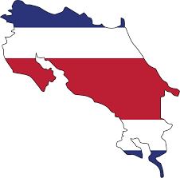
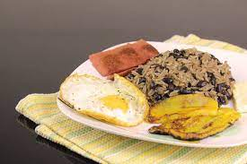

Costa Rica, conocida como la "Suiza de Centroamérica", no solo destaca por su impresionante biodiversidad, sino también por su enfoque en la sostenibilidad y la paz. Este pequeño país tropical abolió su ejército en 1948, convirtiéndose en una de las pocas naciones del mundo en hacerlo de forma permanente. Además, Costa Rica genera más del 99% de su electricidad a partir de fuentes renovables, principalmente hidroeléctricas y geotérmicas, lo que la convierte en un líder mundial en energía limpia. Además, Costa Rica es hogar de una de las poblaciones de colibríes más diversas del mundo, con más de 50 especies diferentes. Este país también es famoso por su café de alta calidad, con la producción de café orgánico que representa una parte significativa de su economía. En resumen, Costa Rica es un lugar extraordinario que combina la belleza natural con un compromiso notable con la paz y la sostenibilidad.
| Nombre | Descripcion | Imagen |
|---|---|---|
| Gallo Pinto | Es el plato nacional de Costa Rica y consiste en arroz y frijoles cocidos juntos, sazonados con cilantro, cebolla, ajo y especias. Suele servirse como desayuno acompañado de huevos, plátanos fritos, queso fresco y natilla. |  |
| Casado | Es un plato típico que consiste en arroz, frijoles, ensalada de repollo, plátanos maduros fritos y algún tipo de carne (pollo, res, cerdo o pescado). | |
| Patacones | : Son rodajas gruesas de plátano verde frito, que se suelen servir como guarnición o acompañamiento. | |
Costa Rica es un pa[is muy turistico, el cual posee diversas opciones para visitar, en el siguiente video se muestran 20 lugares los cuales puedes visitar.